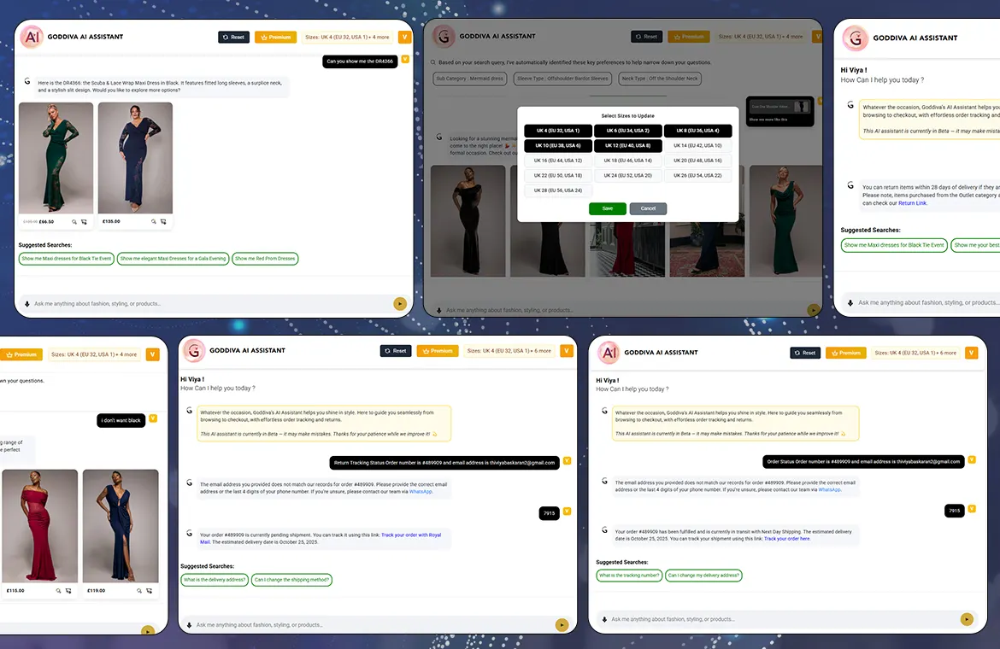
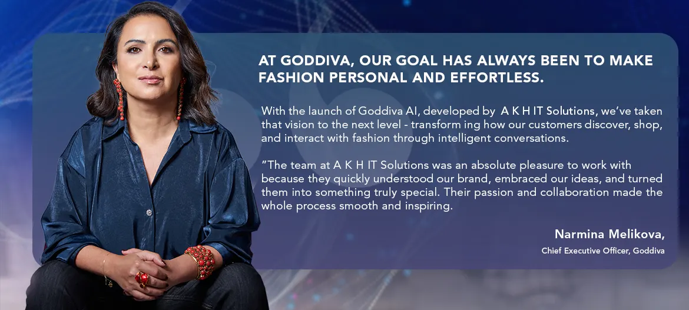
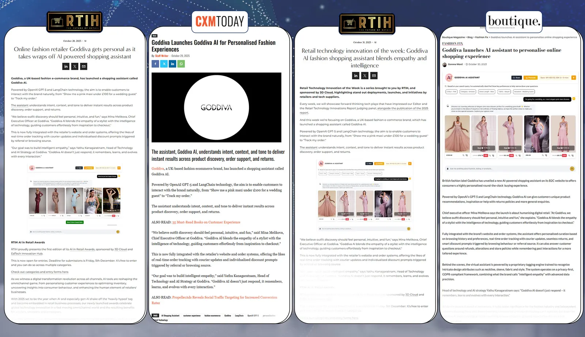

We are proud to announce that A K H IT Solutions has successfully designed, developed, and launched Goddiva AI, an intelligent, ChatGPT-5-powered shopping assistant built for our esteemed client Goddiva, one of the UK’s leading fashion e-commerce brands.
This achievement marks a major milestone in our mission to deliver next-generation AI experiences that transform how customers interact with brands online. With Goddiva AI, online fashion shopping has become more personal, conversational, and intelligent than ever before.
As Goddiva’s trusted technology partner, we are honoured to have built a solution that not only enhances customer experience but also strengthens our client’s digital presence and long-term success.
We express our heartfelt gratitude to Mr Kuganeswaran Thangarajah, Founder and Managing Director of A K H IT Solutions (Pvt) Ltd, whose vision, encouragement, and unwavering belief in innovation have been the cornerstone of our success. From the company’s inception, his guidance and leadership have shaped not only our strategic direction but also the personal and professional growth of every individual within the organisation.
He is a true visionary, one who recognises potential, nurtures talent, and continuously inspires excellence across all teams. His ability to foresee industry trends, foster collaboration, and drive technological transformation has propelled A K H IT Solutions to become a trusted global technology partner.
Mr Kuganeswaran’s integrity, mentorship, and forward-thinking approach have created a culture where innovation thrives, people grow, and success is shared. It is through his constant support and belief in our team that milestones like Goddiva AI become reality.
About Goddiva AI
- Goddiva AI is a smart, chat-based assistant that serves as a personal stylist, shopping guide, and support system, all in one.
- It allows customers to:
- Discover outfits by describing their style or occasion in natural language.
- Track orders and deliveries in real time.
- Handling returns, refunds, and customer queries instantly.
- The assistant provides 24/7 personalised support, helping users find what they love while enhancing confidence in their purchase decisions.

Technology foundation
- Powered by ChatGPT-5 for advanced conversational understanding and human-like dialogue.
- Built with LangChain for context management, prompt chaining, and long-term memory.
- Enhanced with RAG (Retrieval-Augmented Generation) and fine-tuning for contextual accuracy and domain-specific intelligence.
- Fully integrated with Goddiva’s backend systems, including product database, order tracking, and logistics, for real-time, intelligent responses.
This robust foundation enables the AI to adapt to customer needs, recall preferences, and deliver highly relevant, accurate, and friendly interactions.
Strategic purpose and execution
A K H IT Solutions developed Goddiva AI to achieve key strategic goals for our client:
- Enhance Customer Experience: Making fashion discovery faster, easier, and more intuitive.
- Drive Business Growth: Increasing conversion through personalised recommendations.
- Optimise Operations: Reducing support load through AI automation and self-service.
- Elevate Brand Value: Positioning Goddiva as an early adopter of AI-driven retail innovation.
Every element of the system was engineered to align with Goddiva’s business vision and deliver measurable success.
Key benefits for users
- Instant responses to product, order, and return-related queries.
- Smart, personalised recommendations tailored to style, size, and preference.
- Simple, intuitive communication that mirrors a real-life stylist experience.
- Faster resolutions and improved overall satisfaction.
Business impact
The successful deployment of Goddiva AI has brought measurable improvements in multiple areas:
- Higher customer satisfaction and engagement levels.
- Increased sales through better product discovery.
- Reduced return rates thanks to accurate fit and style suggestions.
- Greater efficiency through automated support and instant order handling.
- Stronger brand image as a digitally advanced, customer-focused retailer.
These outcomes reflect the strategic and technical excellence delivered by A K H IT Solutions.
Client testimonial

Technical leadership
This milestone was achieved under the remarkable technical leadership of Mr Gomethan Ganesamoorthy, Tech Lead at A K H IT Solutions. As the company’s first employee, Mr Gomethan has been a driving force behind the development of many of our flagship systems, playing a pivotal role in shaping our technical foundation.
His deep expertise in AI, architecture design, and scalable development, coupled with his dedication to innovation and excellence, was instrumental in bringing Goddiva AI to life. His leadership continues to inspire our entire technical team and reflects the high standards we uphold at A K H IT Solutions.
Any clients or organisations seeking similar innovation and expertise can confidently partner with A K H IT Solutions for custom development, AI solutions, and enterprise-grade system design.
Ongoing technical support and maintenance
Beyond development, A K H IT Solutions provides continuous support and maintenance for the Goddiva website and AI system.
Our technical team ensures:
- Constant performance optimisation and uptime monitoring.
- Secure updates and backend improvements.
- Seamless integration of new features.
- Proactive issue tracking and resolution.
We remain committed to supporting Goddiva’s digital growth with reliable and future-ready technology.
Recognised across global media

The successful launch of Goddiva AI has gained attention across multiple digital platforms and industry media outlets. Various technology and business publications have featured the project, recognising it as a pioneering step in transforming e-commerce into AI-commerce.
These press releases highlighted how A K H IT Solutions and Goddiva collaborated to build an AI-powered personal stylist that redefines online shopping experiences through intelligent conversations.
Featured on:
Future expansion
The next phase of Goddiva AI development is also underway, introducing further innovations to elevate Goddiva’s user experience and business performance in 2026 and beyond.
Celebrating success
The launch of Goddiva AI stands as a proud achievement for A K H IT Solutions, demonstrating how cutting-edge AI, thoughtful design, and strategic execution can deliver both user satisfaction and business growth.
Explore Goddiva AI
https://goddiva.co.uk/pages/ai
Developed, supported and maintained by: A K H IT Solutions (Pvt) Ltd
Launched: October 2025